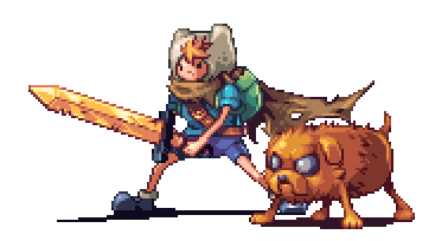
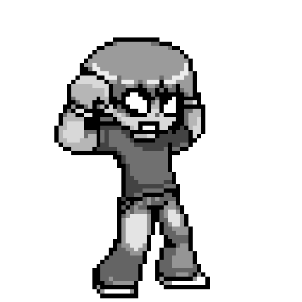
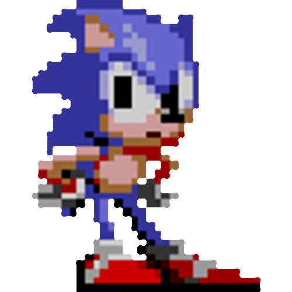
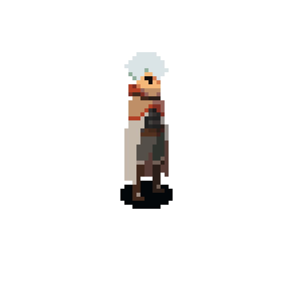
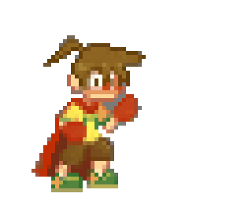

Lista de Jogos Retro
Lista de Jogos Retro

- Super Mario Bros. (1985)
- The Legend of Zelda (1986)
- Pac-Man (1980)
- Donkey Kong (1981)
- Tetris (1984)
- Super Metroid (1994)
- Sonic the Hedgehog (1991)
- Street Fighter II (1991)
- Mega Man 2 (1988)
- Castlevania (1986)
- Contra (1987)
- Final Fantasy VI (1994)
- Metroid (1986)
- Space Invaders (1978)
- Mortal Kombat II (1993)


- Super Mario World (1990)
- Street Fighter II Turbo (1992)
- Mega Man X (1993)
- Final Fantasy VII (1997)
- The Legend of Zelda: A Link to the Past (1991)
- Super Castlevania IV (1991)
- Chrono Trigger (1995)
- EarthBound (1994)
- GoldenEye 007 (1997)
- Sonic the Hedgehog 2 (1992)
- Super Mario Kart (1992)
- Secret of Mana (1993)
- Donkey Kong Country (1994)
- Star Fox (1993)
- Mortal Kombat 3 (1995)

- Super Mario Bros. 3 (1988)
- The Legend of Zelda: Link's Awakening (1993)
- Final Fantasy IV (1991)
- Castlevania: Symphony of the Night (1997)
- Street Fighter II: The World Warrior (1991)
- Mega Man 3 (1990)
- Super Metroid (1994)
- Donkey Kong Country 2: Diddy's Kong Quest (1995)
- Contra III: The Alien Wars (1992)
- Earthworm Jim (1994)
- Sonic the Hedgehog 3 (1994)
- Super Mario World 2: Yoshi's Island (1995)
- Mortal Kombat II (1993)
- Secret of Mana (1993)
- Star Fox 64 (1997)


- Super Mario RPG: Legend of the Seven Stars (1996)
- The Legend of Zelda: Ocarina of Time (1998)
- Metal Gear Solid (1998)
- Resident Evil 2 (1998)
- Final Fantasy IX (2000)
- Diablo II (2000)
- Half-Life (1998)
- Gran Turismo 2 (1999)
- Tony Hawk's Pro Skater 2 (2000)
- Crash Bandicoot (1996)
- Silent Hill (1999)
- GoldenEye 007 (1997)
- Pokémon Red/Blue (1996)
- StarCraft (1998)
- Final Fantasy Tactics (1997)

voltar